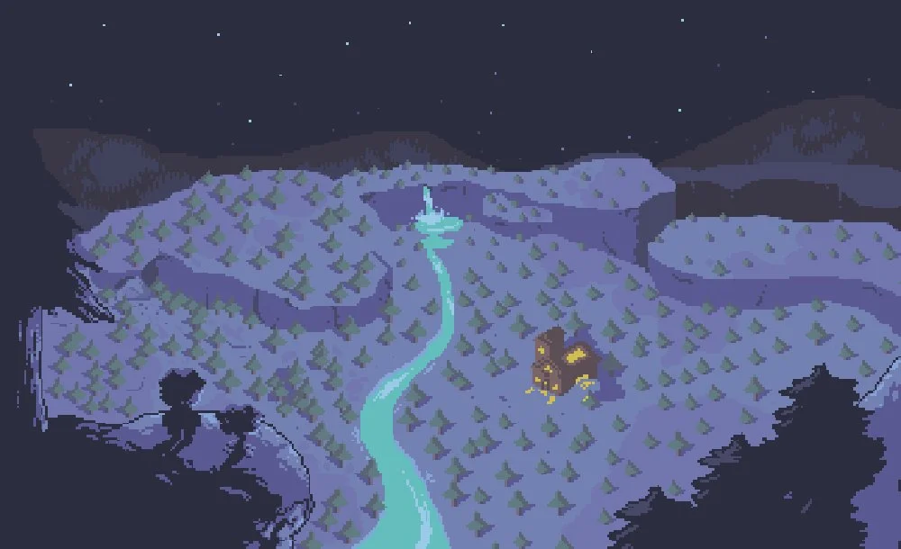

Couveneige ( Snowdin en VO ) est le village trouvé par le protagoniste dans l'Outremonde après avoir quitté les Ruines et traversé la Forêt de Couveneige. C'est un village bien gardé, entre autres par Sans et Papyrus, supposément car il est proche de l'entrée depuis le Mont Ebott, le rendant sujet aux traversées d'humains. Quitter la ville amènera le protagoniste aux Chutes à pied, où en prenant le bateau de Passeur, aux Chutes ou à Calciterre au choix.
